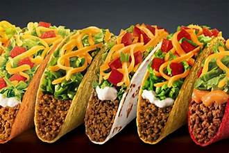
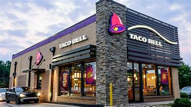

There are many healthy items on the menu:
Taco Bell has the Make It Fresco option that can cut down the calories and fat of a menu item through removing a couple of ingredients. By replacing heavier ingredients with pico de gallo, making it Fresco generally removes 45 calories and reduces saturated fat. If you want to add cheese or sauces, ask for an “easy” portion to reduce the serving size. This trick to cut down on extra calories, saturated fat, and sodium without sacrificing flavor. When ordering a plain crunchy taco or power bowl with chicken or black beans, loading up the veggies on top with tomatoes, onions, and lettuce” to boost nutrients and fiber. Choosing black beans instead of refried beans can lower the fat content of your meal, making it a lighter and healthier option.
Fun Facts about Taco Bell:
Before Taco Bell, they created fast-food joint Taco Tia, offering hamburgers, hot dogs, milkshakes and tacos. Taco Bell was the first fast food chain to hire Women as managers. As the face of Taco Bell in the late 1990s and early 2000s, the chihuahua Gidget popularized the line “Yo quiero Taco Bell". A not so fun fact is that Gidget died in 2009 at 15 years old. Free tacos were offered if a piece of a space station crashed on their floating targets in the ocean. The success sparked from the wildly popular menu item allowed Taco Bell to employ more than 15,000 new workers in 2012, the company claimed.
